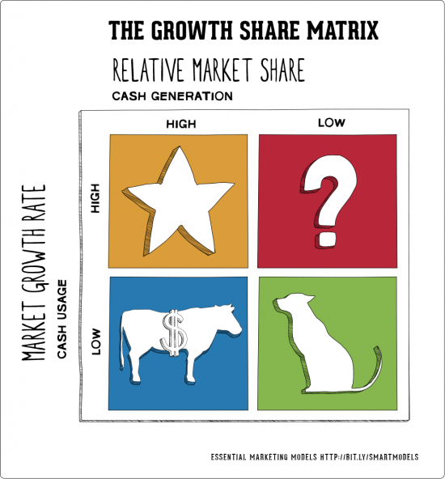
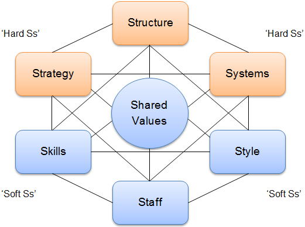
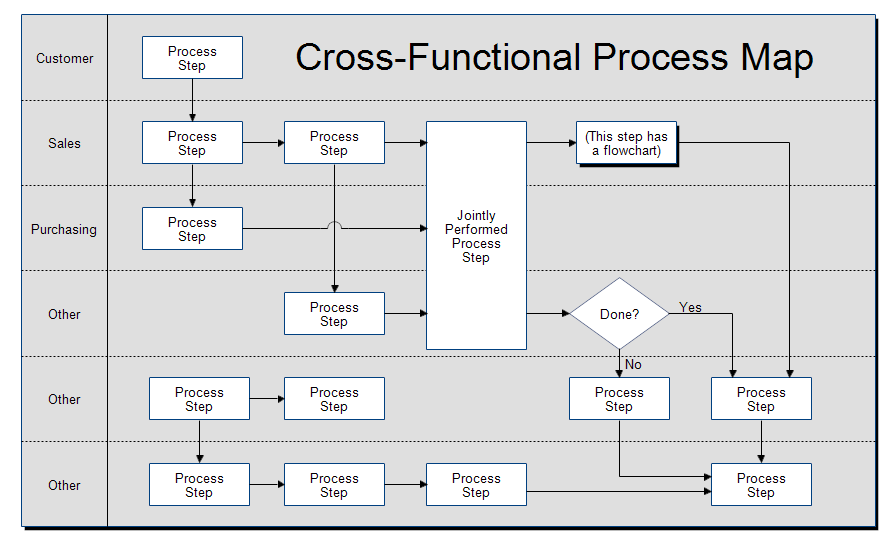
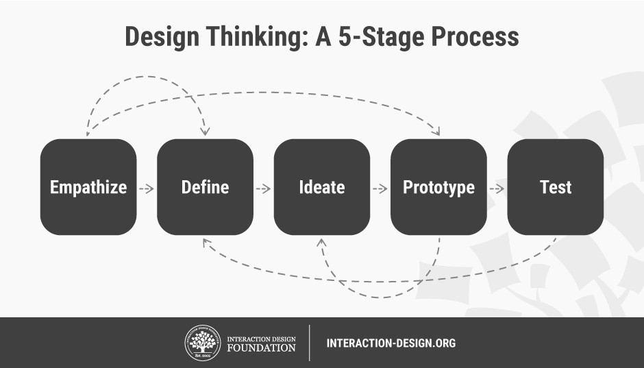
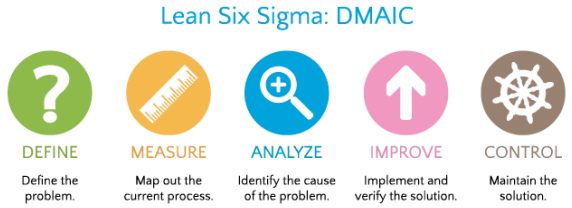
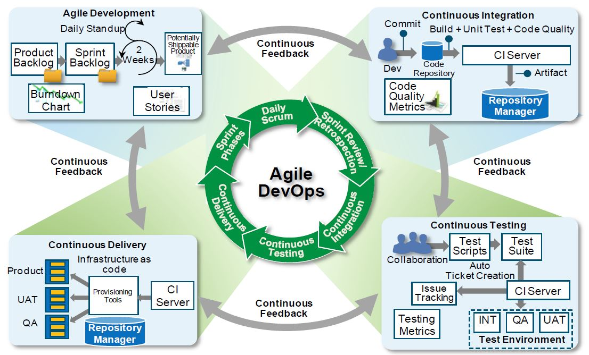
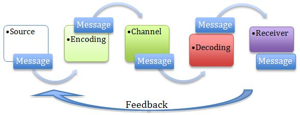
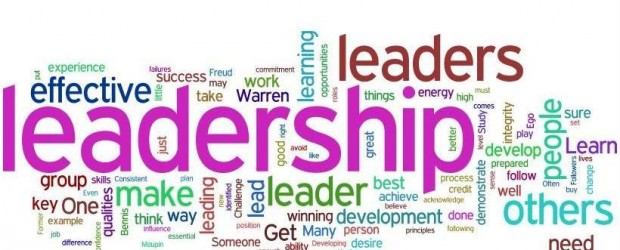
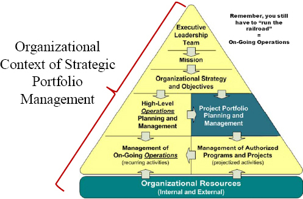
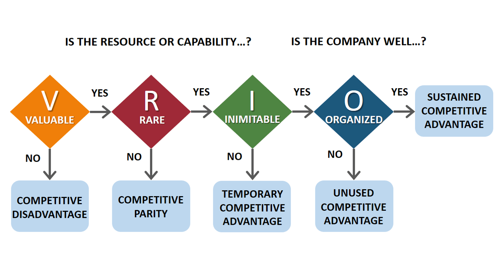

혁신 실행과정에서 사용가능한 기법/Tool들은 다양하게 많으나 적합한 것으로 올바르게 사용하는 것이 중요한데, 오히려 새로운 방식
유행에 집착하여 본질을 놓치는 경우를 많이 보게된다. Agile, Devops를 강조하지만 오히려 내용은 반대의 경우를 볼 수가 있다. 왜 그럴까 ?
기존 것의 사용방식을 빠르게 이해하고 쉽게 사용할 수 있어야 하고, 그 다음 새로운 것에 대한 활용 가능성이다.
그러한 점에서 현재까지 가능한 Tool들에 대한 소개를 하고자 한다.
** :
Project Financing
Portfolio Management
PI/IT Project Management
Document and collaboration
BCG, MCKINSEY Matrix

Image source : (https://www.smartinsights.com/marketing-planning/marketing-models/use-bcg-matrix/)
Process Mapping
McKinsey 7s model is a tool that analyzes firm’s organizational design by looking at 7 key internal elements: strategy, structure, systems, shared values, style, staff and skills,
in order to identify if they are effectively aligned and allow organization to achieve its objectives.

Image source ( https://www.strategicmanagementinsight.com/tools/mckinsey-7s-model-framework.html )
Process Mapping
Process Mapping : Process mapping consists of three different kinds of charts:
Relationship Maps show the overall view. They show the departments of an organization and how they interact with
suppliers and customers.
Cross-functional Maps or Swim Lane Charts show which department performs each step and the inputs and outputs of each step.
These maps have more detail than a relationship map but less than a flowchart.
Process Flow charts or Process Flow Diagrams take a single step from a cross-functional map and expand it
to show more detail. Process flow charts and process flow diagrams are the same thing.
Maps and flowcharts help people understand a work process. They make the tasks, interfaces, inputs,
and outputs more visible. Analyzing a process map may help reduce cycle time, reduce costs, and increase productivity.
These charts can be downloaded and edited. It is often easier to modify an existing chart than to draw a new one.
If you haven't done so already, download the free trial version of RFFlow. Once it is installed,
you can open the samples on this page directly in RFFlow by clicking the links to the right of each picture.
Reference Site ( https://www.rff.com/process_mapping.php )
Cross Functional Process Map

Image source ( https://www.rff.com/cross-functional-template.php )
Design Thinking
Stanford’s Hasso-Plattner Institute of Design describes Design Thinking as a five-stage process.
These stages are not always sequential; nor do they require design teams to approach them thus.
Designers will find the stages often occur in parallel and see repeated use on an iterative basis.
Consequently, designers should consider these not a “recipe”,
but different modes that contribute to a project.

Image source ( https://www.interaction-design.org/literature/topics/design-thinking )
6 시그마 / DFMA

( Image source )
Reference : https://www.greycampus.com/blog/quality-management/dmaic-a-six-sigma-process-improvement-methodology
How Six Sigma Works
There are three basic elements to Six Sigma:
1. Process improvement:
The purpose of process improvement is to remove the root causes of result deficiencies in processes that already exist in the organisation. These performance deficiencies may be causing real problems for the organisation, or may be preventing
it from working as efficiently and effectively as it could.
To reduce these defects a 5-step approach is used.
2. 2. Process design: Many a times simply improving existing processes is not enough, and, hence, new processes will need to be designed, or existing processes will need to be re-designed. There are several reasons why this could be necessary:
● An organisation may choose to replace, rather than repair,
one or more of its core processes.
● An organisation discovers, during an improvement project,
that simply improving an existing process will never deliver
the level of quality its customers are demanding.
● An organisation identifies an opportunity to offer an entirely
new product or service.
As with process improvement, a five-step approach is used to design/re-design a process:
3. Process management: Because it requires a fundamental change in the way an organisation is structured and managed, process management is often the most challenging and time-consuming part of Six Sigma.
In general, process management consists of:
● Defining processes, key customer requirements, and process “owners”.
● Measuring performance against customer requirements and key performance indicators.
● Analysing data to enhance measures and refine the process management mechanisms.
● Controlling process performance by monitoring process inputs, process operation, and process outputs, and responding quickly to problems and process variations.
DFMA
 Image source ( http://www.coresourcesolutions.com/process/P1-DFMA.htm )
Image source ( http://www.coresourcesolutions.com/process/P1-DFMA.htm )
Agile / Devops
Theory :

Image source ( https://obsidian.global/what-we-do/devops/ )
Communication
Communication procedure

Image source ( https://www.bayridgecounsellingcentres.ca/communication/ )
Leadership & 조직관리
어떻게 조직에 전파하고 소통할 것인가 ?
The conundrum of leadership and open collaboration in the social era

Image source ( https://www.itbusiness.ca/blog/the-conundrum-of-leadership-and-open-collaboration-in-the-social-era/44506 )
Strategic Oaganization
디지털 기술을 이용한 프로세스 혁신을 할 때 제일 먼저 강조하고 싶은 것이 사업모델에서 프로세스 및
사업방식에 대한 평가이다.
Portfolio Mgt.
This paper is a case study in strategic portfolio management focusing on one example from the United States, the Boeing 787 and one example from EMEA, the EADS Airbus A380. The overarching learning objective of this paper and subsequent presentation is to highlight best practices
that the attendees can bring back to their organizations to close the gap between strategy as developed by their executive leadership team and the actual results realized. This paper is organized as follows:

Image source ( https://www.pmi.org/learning/library/strategic-portfolio-management-8346 )
VRIO Framework : 무엇이 우리를 강하게 하는가 ?

Image source ( https://www.business-to-you.com/vrio-from-firm-resources-to-competitive-advantage/ )
Reference Site :
Image source ( https://www.strategicmanagementinsight.com/tools/vrio.html )
디지털 활용 역량
Web 프로그램 역량 : 개발 Tool 활용, HTML/CSS/JavaScript, JAVA/PHP, DB
CLOUD 활용 : 각종 Open source
Web 시스템 구축 : 시스템 개발 Tool, 각종 Library를 이용 프로그램 개발하고, hardware 적으로 Arduino, RasberryPI 이용
Pilot 시스템을 구축 (각종 Tool kit 활용)
디지털 기술 이해 : 여러가지 디지털 기술을 활용하고 Web Hosting Opens source으로 실행 역량
데이터 분석 이해 : Open source 분석 프로그램 R 및 각종 분석 프로그램의 업무 활용